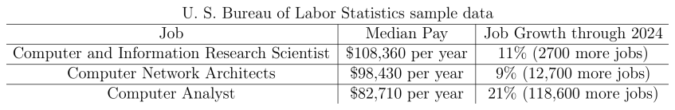

Computer Science Program Description
1.Program Description
Do you want to know how to design and program the computers powering some of today’s greatest innovations? Ever wondered how your phone knows where the nearest Starbucks is, how Google’s self-driving car is even possible, or how your music and photos live in the cloud? Maybe you want to know how computers protect businesses — and people — and other cybersecurity issues. AUM’s Computer Science Program, with a curriculum based on the latest ACM/IEEE recommendations and an emphasis on high-performance computing, will prepare you for a career in computer programming, networking, database management, multimedia design or technology architecture.
2.Points of Pride
You’ll have access to the most powerful computational resources and expertise in the country through our partnership with the NSF-supported Extreme Science and Engineering Discovery Environment. Computer Science faculty are engaged in the private sector, supporting research and partnerships with national and international user groups and initiatives. 
3.Put Your Degree to Work
Note: While salaries vary depending on several factors including your level of experience, education and training, and geography and industry, here is a sampling of the future job growth and salaries in this area. Employment of computer and information technology occupations is projected to grow 12 percent from 2014 to 2024, faster than the average for all other occupations. The most recent median annual wage for computer and information technology occupations $79,390 — higher than the median annual wage for all other occupations.